Основные настройки phpMyAdmin
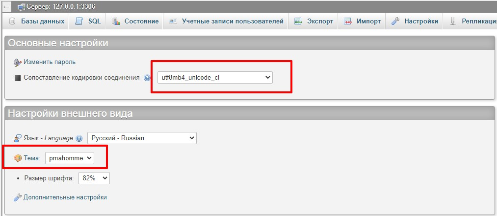Кодировка позволяет избежать встречи с краказябрами, а тема pmahomme сделает интерфейс более приятный для глаза
1 Кликаем по кнопке Создать БД
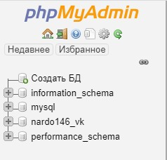2 В открывшемся окне мы указываем имя нашей будущей БД. Кодировку можно не трогать, так как мы ее указали на глобальном уровне
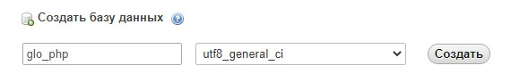После указания имени БД жмем кнопку Создать
1 Сразу же откроется окно, где нам предложат создать таблицу. Указываем имя и количество столбцов в таблице
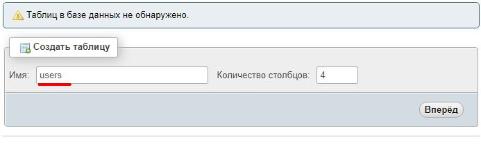2 Как правило первый столбец таблицы выделяют под уникальный индекс записи - id. В разделе ИНДЕКС для поле id выберем тип PRIMARY. Так же указываем галочку A_I (автоинкремент)
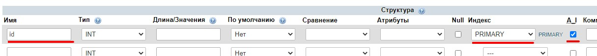3 Оставшиеся поля заполняем по нашему усмотрению
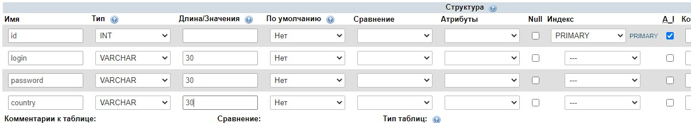Жмем Созранить
1 Открываем таблицу и верхней панели нажимаем кнопку Вставить
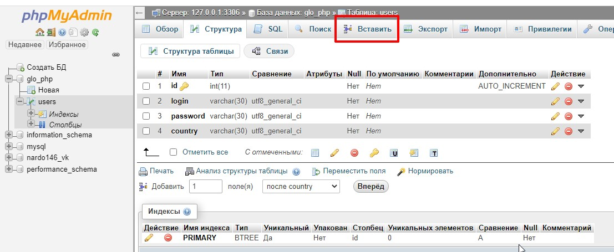2 Интерфейс добавления записи интуитивно понятен, заполняем поля и жмем кнопку Вперед (id указывать ненужно, т.к это инкремент и он заполнится автоматом)
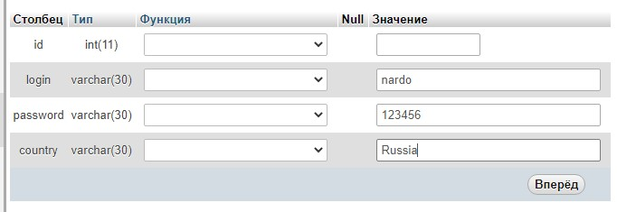Для просмотра самой таблицы жмем вкладку Обзор
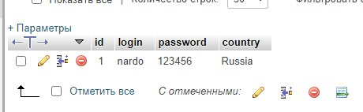1 Переходим на главную страницу phpMyAdmin в самом низу видим кнопку Консоль
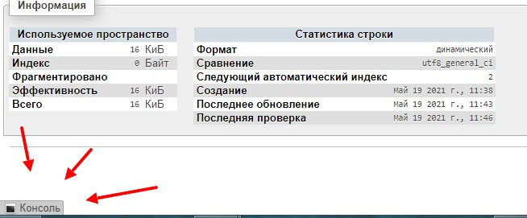после каждой команды ставится точка с запятой. Для выполнения запроса жмем Ctrl + Enter
VALUES - это значения полей
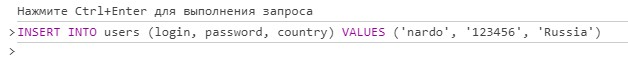иными словами показать все ( * ) из таблицы users где country = 'Russia'
Второй вариант
Третий вариант
т.е. показать логин и стран в таблице users где страна равна USA
Сортировка записей по id

Если в конце запроса добавить слово DESC то сортировка будет по убыванию
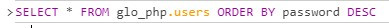Что имеется ввиду. Допустим у нас есть таблица с пользователями (user). Поле таблицы login должно быть уникальное. У пользователя могут быть заказы (таблица orders). Как определить к кому относится тот или иной заказ, к какому пользователю? В таблице orders нам нужно сделать так что бы в поле order_login подставлялось значение из таблицы users. Иными словами нельзя создать заказ пользователя, запись которого будет отсутствовать в таблице users. Как установить эту связь?
Перед тем как устанавливать связть в таблице user необходимо сделать поле login уникальным, делается это следующей командой:
ALTER TABLE users ADD UNIQUE (login) 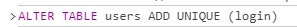После этого создаем связь
ALTER TABLE orders ADD CONSTRAINT FK_users_orders FOREIGN KEY (order_login) REFERENCES users (login) ON UPDATE CASCADE ON DELETE CASCADE 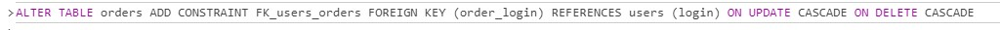Что бы разорвать связь вводим команду:
ALTER TABLE orders DROP FOREIGN KEY FK_users_orders